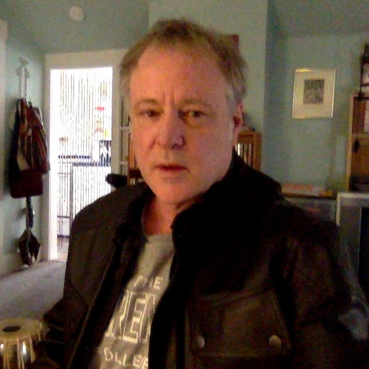

About Us
About Us

Ian Beardsley studied physics at The University of Oregon and worked in astronomy For four years at the state observatory, Pine Mountain Observatory in the high desert East of Bend, Oregon. His name appears on several papers in the Astrophysical Journal.
The Mathematical Nature of ... by Ian Beardsley
Analysis of Planetary Equat... by Ian Beardsley
Mathematical Operations On ... by Ian Beardsley
Weird Calculus by Ian Beardsley
Weird Mathematics and Nature by Ian Beardsley
Weird Mathematics and Nature by Ian Beardsley
Weird Mathematics And The P... by Ian Beardsley